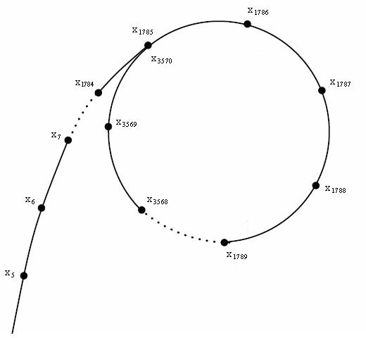

分解质因数
引入
给定一个正整数 \(N \in \mathbf{N}_{+}\)，试快速找到它的一个 非平凡因数。
考虑朴素算法，因数是成对分布的，\(N\) 的所有因数可以被分成两块，即 \([2, \sqrt N]\) 和 \([\sqrt N+1,N)\)。只需要把 \([2, \sqrt N]\) 里的数遍历一遍，再根据除法就可以找出至少两个因数了。这个方法的时间复杂度为 \(O(\sqrt N)\)。
当 \(N\ge10^{18}\) 时，这个算法的运行时间我们是无法接受的，希望有更优秀的算法。一种想法是通过随机的方法，猜测一个数是不是 \(N\) 的因数，如果运气好可以在 \(O(1)\) 的时间复杂度下求解答案，但是对于 \(N\ge10^{18}\) 的数据，成功猜测的概率是 \(\frac{1}{10^{18}}\), 期望猜测的次数是 \(10^{18}\)。如果是在 \([2,\sqrt N]\) 里进行猜测，成功率会大一些。我们希望有方法来优化猜测。
朴素算法
最简单的算法即为从 \([2, \sqrt N]\) 进行遍历。
1 2 3 4 5 6 7 8 9 10 11 12 13 | |
1 2 3 4 5 6 7 8 9 10 | |
我们能够证明 result 中的所有元素即为 N 的全体素因数。
证明 result 中即为 \(N\) 的全体素因数
首先考察 N 的变化。当循环进行到 i 结束时，由于刚执行结束 while(N % i == 0) N /= i 部分，i 不再整除 N。而且，每次除去一个因子，都能够保证 N 仍整除 \(N\)。这两点保证了，当循环进行到 i 开始时，N 是 \(N\) 的一个因子，且不被任何小于 i 的整数整除。
其次证明 result 中的元素均为 \(N\) 的因子。当循环进行到 i 时，能够在 result 中存入 i 的条件是 N % i == 0，这说明 i 整除 N，且已经说明 N 是 \(N\) 的因子，故而有 i 是 \(N\) 的因子。当对 i 的循环结束时，若 N 不为一，也会存入 result。此时它根据前文，也必然是 \(N\) 的一个因子。
其次证明 result 中均为素数。我们假设存在一个在 result 中的合数 \(K\)，则必然存在 i 不超过 \(\sqrt K\)，满足 i 是 K 的一个因子。这样的 \(K\) 不可能作为循环中的某个 i 存入 result，因为第一段已经说明，当循环到 \(K\) 时，N 不被任何小于 \(K\) 的 i 整除。这样的 \(K\) 也不可能在循环结束后加入，因为循环退出的条件是 i * i > N，故而已经遍历完了所有不超过 \(\sqrt K\) 的 i，而且据上文所说， 这些 i 绝不能整除目前的 N，亦即 \(K\)。
最后证明，所有 \(N\) 的素因子必然出现在 result 中。不妨假设 \(p\) 是 \(N\) 的一个素因子，但并没有出现在 result 中。根据上文的讨论，\(p\) 不可能是循环中出现过的 i。设 i 是退出循环前最后的 i，则 i 严格小于 \(p\)，而退出循环后的 N 不被之前的 i 整除，故而 \(p\) 整除 N。所以最后的 N 大于一，则根据前文所述，它必然是素数，则 N 就等于 \(p\)，必会在最后加入 result，与假设矛盾。
值得指出的是，如果开始已经打了一个素数表的话，时间复杂度将从 \(O(\sqrt N)\) 下降到 \(O(\sqrt{\frac N {\ln N}})\)。去 筛法 处查阅更多打表的信息。
例题：CF 1445C
Pollard Rho 算法
引入
利用暴力算法获得一个非平凡因子的复杂度为 \(O(p)=O(\sqrt N)\)，这里，\(p\) 是 \(N\) 的最小素因子。而下面要介绍的 Pollard-Rho 算法是一种随机化算法，可以在 \(O(\sqrt p)=O(N^{1/4})\) 的期望复杂度获得一个非平凡因子（注意！非平凡因子不一定是素因子）。
它的核心想法是，对于一个随机自映射 \(f: \mathbb Z_p \rightarrow \mathbb Z_p\)，从任何一点 \(x_1\) 出发，迭代计算 \(x_n = f(x_{n-1})\)，将在 \(O(\sqrt p)\) 期望时间内进入循环。如果能够找到 \(x_i \equiv x_j \pmod p\)，则 \(p\) 整除 \(\gcd(|x_i-x_j|, N)\)，这一最大公约数就是 \(N\) 的一个非平凡因子。
要理解进入循环的期望时间为 \(O(\sqrt p)\)，可以从生日悖论中获得启发。
生日悖论
不考虑出生年份（假设每年都是 365 天），问：一个房间中至少多少人，才能使其中两个人生日相同的概率达到 \(50\%\)?
解：假设一年有 \(n\) 天，房间中有 \(k\) 人，用整数 \(1, 2,\dots, k\) 对这些人进行编号。假定每个人的生日均匀分布于 \(n\) 天之中，且两个人的生日相互独立。
设 \(k\) 个人生日互不相同为事件 \(A\), 则事件 \(A\) 的概率为
至少有两个人生日相同的概率为 \(P(\overline A)=1-P(A)\)。根据题意可知 \(P(\overline A)\ge\frac{1}{2}\), 那么就有
由不等式 \(1+x\le \mathrm{e}^x\) 可得
因此
将 \(n=365\) 代入，解得 \(k\geq 23\)。所以一个房间中至少 \(23\) 人，使其中两个人生日相同的概率达到 \(50\%\), 但这个数学事实十分反直觉，故称之为一个悖论。
当 \(k>56\)，\(n=365\) 时，出现两个人同一天生日的概率将大于 \(99\%\)1。那么在一年有 \(n\) 天的情况下，当房间中有 \(\frac{1}{2}(\sqrt{8n\ln 2+1}+1)\approx \sqrt{2n\ln 2}\) 个人时，至少有两个人的生日相同的概率约为 \(50\%\)。
类似地可以计算，随机均匀地选取一列生日，首次获得重复生日需要的人数的期望也是 \(O(\sqrt n)\)。设这一人数为 \(X\)，则
这启发我们，如果可以随机选取一列数字，出现重复数字需要的抽样规模的期望也是 \(O(\sqrt n)\) 的。
利用最大公约数求出一个约数
实际构建一列模 \(p\) 的随机数列并不现实，因为 \(p\) 正是需要求的。所以，我们通过 \(f(x)=(x^2+c)\bmod N\) 来生成一个伪随机数序列 \(\{x_i\}\)：随机取一个 \(x_1\)，令 \(x_2=f(x_1),\ x_3=f(x_2),\ \dots,\ x_i=f(x_{i-1})\)，其中 \(c\in[1,N)\) 是一个随机选取的常数。
这里选取的函数容易计算，且往往可以生成相当随机的序列。但它并不是完全随机的。举个例子，设 \(n=50,\ c=6,\ x_1=1\)，\(f(x)\) 生成的数据为
可以发现数据在 \(x_4\) 以后都在 \(31,17,45\) 之间循环。如果将这些数如下图一样排列起来，会发现这个图像酷似一个 \(\rho\)，算法也因此得名 rho。

更重要的是，这样的函数确实提供了 \(\mathbb Z_p\) 上一个自映射。也就是说，它满足性质：如果 \(x\equiv y\pmod p\)，则 \(f(x)\equiv f(y)\pmod p\)。
证明
若 \(x\equiv y\pmod p\)，则 \(x^2+c\equiv y^2+c\pmod p\)。注意到，\(f(x)=x^2+c-k_xN\)，这里 \(k_x\) 是一个依赖于 \(x\) 的整数，且 \(p|N\)，所以有 \(f(x)=x^2+c\pmod p\)，因而 \(f(x)=f(y)\pmod p\)。
作为 \(\mathbb Z_p\) 上的伪随机自映射反复迭代得到的序列，\(\{x_n\bmod p\}\) 在 \(O(\sqrt p)\) 的期望时间内就会出现重复。只要我们观察到这样的重复 \(x_i\equiv x_j\pmod p\)，就可以根据 \(\gcd(|x_i-x_j|,N)\) 求出一个 \(N\) 的非平凡因子。注意到，由于 \(p\) 未知，我们并没有办法直接判断重复的发生，一个简单的判断方法正是 \(\gcd(|x_i-x_j|,N)\) 严格大于一。
这一算法并不是总能成功的，因为 \(\gcd(|x_i-x_j|,N)\) 可能等于 \(N\)。也就是说，\(x_i\equiv x_j\pmod N\)。此时，\(\{x_n\bmod p\}\) 首次发生重复时，恰好 \(\{x_n\}\) 也发生重复了。我们没有得到一个非平凡因子。而且，\(\{x_n\}\) 开始循环后，再继续迭代也没有意义了，因为之后只会重复这一循环。该算法应输出分解失败，需要更换 \(f(x)\) 中选取的 \(c\) 重新分解。
根据上文分析，理论上，任何满足 \(\forall x \equiv y \pmod p, f(x) \equiv f(y) \pmod p\)，且能够保证一定伪随机性的函数 \(f(x)\)（例如某些多项式函数）都可以用在此处。实践中，主要使用 \(f(x)=x^2+c\ (c\neq 0,-2)\)。2
实现
我们需要实现的算法，能够在迭代过程中快速判断 \(\{x_n\bmod p\}\) 是否已经出现重复。将 \(f\) 看成以 \(\mathbb Z_p\) 为顶点的有向图上的边，我们实际要实现的是一个判环算法。只是将判等改为了判断 \(\gcd(|x_i-x_j|,N)\) 是否大于一。
Floyd 判环
假设两个人在赛跑，A 的速度快，B 的速度慢，经过一定时间后，A 一定会和 B 相遇，且相遇时 A 跑过的总距离减去 B 跑过的总距离一定是圈长的倍数。
设 \(a=f(0),b=f(f(0))\)，每一次更新 \(a=f(a),b=f(f(b))\)，只要检查在更新过程中 \(a\) 和 \(b\) 是否相等，如果相等了，那么就出现了环。
我们每次令 \(d=\gcd(|x_i-x_j|,N)\)，判断 d 是否满足 \(1< d< N\)，若满足则可直接返回 \(d\)。如果 \(d=N\)，则说明 \(\{x_i\}\) 已经形成环，在形成环时就不能再继续操作了，直接返回 \(N\) 本身，并且在后续操作里调整随机常数 \(c\)，重新分解。
基于 Floyd 判环的 Pollard-Rho 算法
1 2 3 4 5 6 7 8 9 10 11 12 | |
1 2 3 4 5 6 7 8 9 10 11 12 13 | |
Brent 判环
实际上，Floyd 判环算法可以有常数上的改进。Brent 判环从 \(k=1\) 开始递增 \(k\)，在第 \(k\) 轮，让 A 等在原地，B 向前移动 \(2^k\) 步，如果在过程中 B 遇到了 A，则说明已经得到环，否则让 A 瞬移到 B 的位置，然后继续下一轮。
可以证明3，这样得到环之前需要调用 \(f\) 的次数永远不大于 Floyd 判环算法。原论文中的测试表明，Brent 判环需要的平均时间相较于 Floyd 判环减少了 \(24\%\)。
倍增优化
无论是 Floyd 判环还是 Brent 判环，迭代次数都是 \(O(\sqrt p)\) 的。但是每次迭代都用 \(\gcd\) 判断是否成环会拖慢算法运行速度。可以通过乘法累积来减少求 \(\gcd\) 的次数。
简单来说，如果 \(\gcd(a,N)>1\)，那么 \(\gcd(ab\bmod N,N)=\gcd(ab,N)>1\) 对于任意 \(b\in\mathbb N_+\) 都成立。也就是说，如果计算得到 \(\gcd(\prod |x_i-x_j| \bmod N,N)>1\)，那么必然有其中一对 \((x_i,x_j)\) 满足 \(\gcd(|x_i-x_j|,N)>1\)。如果该乘积在某一时刻得到零，则分解失败，退出并返回 \(N\) 本身。
如果每 \(k\) 对计算一次 \(\gcd\)，则算法复杂度降低到 \(O(\sqrt p+k^{-1}\sqrt p\log N)\)，这里，\(\log N\) 为单次计算 \(\gcd\) 的开销。注意到 \(k\) 和 \(\log N\) 大致同阶时，可以得到 \(O(\sqrt p)\) 的期望复杂度。具体实现中，大多选取 \(k=128\)。
这里提供 Brent 判环且加上倍增优化的 Pollard-Rho 算法实现。
实现
1 2 3 4 5 6 7 8 9 10 11 12 13 14 15 16 17 18 19 20 21 | |
1 2 3 4 5 6 7 8 9 10 11 12 13 14 15 16 17 18 19 20 21 22 23 24 | |
复杂度
Pollard-Rho 算法中的期望迭代次数为 \(O(\sqrt p)\)，这里 \(p\) 是 \(N\) 的最小素因子。具体实现无论是采用 Floyd 判环还是 Brent 判环，如果不使用倍增优化，期望复杂度都是 \(O(\sqrt p\log N)\)；在加上倍增优化后，可以近似得到 \(O(\sqrt p)\) 的期望复杂度。
值得一提的是，前文分析基于的是完全随机的自映射函数，但 Pollard-Rho 算法实际使用的是伪随机函数，所以该算法并没有严格的复杂度分析，实践中通常跑得较快。
例题：求一个数的最大素因子
对于一个数 \(n\)，用 Miller Rabin 算法 判断是否为素数，如果是就可以直接返回了，否则用 Pollard-Rho 算法找一个因子 \(p\)，将 \(n\) 除去因子 \(p\)。再递归分解 \(n\) 和 \(p\)，用 Miller Rabin 判断是否出现质因子，并用 max_factor 更新就可以求出最大质因子了。由于这个题目的数据过于庞大，用 Floyd 判环的方法是不够的，这里采用倍增优化的方法。
实现
1 2 3 4 5 6 7 8 9 10 11 12 13 14 15 16 17 18 19 20 21 22 23 24 25 26 27 28 29 30 31 32 33 34 35 36 37 38 39 40 41 42 43 44 45 46 47 48 49 50 51 52 53 54 55 56 57 58 59 60 61 62 63 64 65 66 67 68 69 70 71 72 73 74 75 76 77 78 79 80 81 82 83 84 85 86 87 88 89 90 91 92 93 94 95 96 97 | |
参考资料与链接
-
https://en.wikipedia.org/wiki/Birthday_problem#Reverse_problem ↩
-
Menezes, Alfred J.; van Oorschot, Paul C.; Vanstone, Scott A. (2001). Handbook of Applied Cryptography. Section 3.11 and 3.12. ↩
-
Brent, R. P. (1980), An improved Monte Carlo factorization algorithm, BIT Numerical Mathematics, 20(2): 176–184, doi:10.1007/BF01933190 ↩